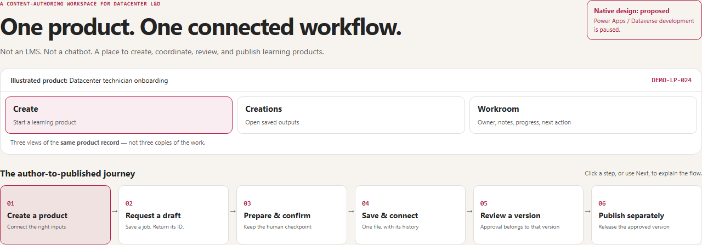
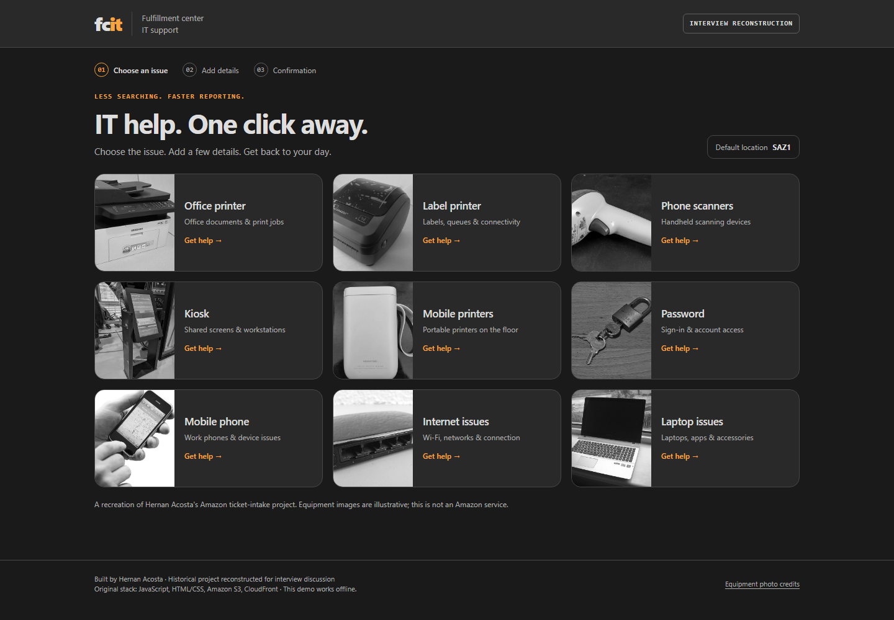

Illustrated product & proposed native design
Learning Studio
One product record across Create, Creations, and Workroom. Follow tracked draft work, saved outputs, version-specific review, and separate publication.
Explore the flowHernan Acosta · Technical enablement demos
Two public-safe visuals for explaining workflow design, technical enablement, and hands-on building. Explore the learning-product lifecycle or walk through a simple IT request.

One product record across Create, Creations, and Workroom. Follow tracked draft work, saved outputs, version-specific review, and separate publication.
Explore the flow
Choose an issue, add a location and a few details, and see a fictional confirmation. A recreation of the category-first workflow built at Amazon.
Try the ticket flowThese are independent explanations and reconstructions, not official Microsoft or Amazon services. All interactions use fictional examples. No company authentication, AI service, or ticketing system is connected. Equipment photo attribution is included in the ticket demo.